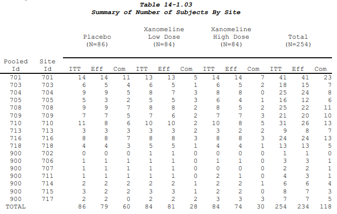

Multiple columns of Row Labels
It is not all that unusual for listings (and some tables) to have multiple row label columns. When this happens, it is often easier to avoid using gt’s out-of-the box stub functions/formatting. An example of a table like this is the “Summary of Number of Subjects by Site” from the CDISC pilot. 
To make this table the values will be long with “Pooled Id” and “Site Id” in their own columns, as if they were group or label variables. We also will need a column for the parameters even though they are all the same.
data <- tribble(
~`Pooled Id`, ~`Site Id`,
"701", "701",
"703", "703",
"704", "704",
"705", "705",
"708", "708",
"709", "709",
"710", "710",
"713", "713",
"716", "716",
"718", "718",
"900", "702",
"900", "706",
"900", "707",
"900", "711",
"900", "714",
"900", "715",
"900", "717",
"Total", " ") %>%
crossing(col1 = c("Placebo (N=86)",
"Xanomeline Low Dose (N=84)",
"Xanomeline High Dose (N=84)",
"Total (N=254)"),
col2 = factor(c("ITT", "Eff", "Com"), levels = c("ITT", "Eff", "Com"))) %>%
mutate(val = rpois(216, 15), # Here I am just faking the data for display purposes
param = "val")Once we have the data in the standard ARD format we can make the tfrmt. What makes this tfrmt different is we won’t include group or label, and our two ID columns will be displayed as regular columns. This also means that all columns of the table, including the ID columns, can be ordered via the col_plan(). Because the col_plan() follows the conventions of select() we can’t specify the order of the highest level spanning columns and the lower level columns. But, tfrmt respects the order things are put in, which is why we used a factor for the populations.
tfrmt(
param = "param",
values = "val",
column = vars(col1, col2),
body_plan = body_plan(
frmt_structure(group_val = ".default", label_val = ".default", frmt("XX"))
),
row_grp_plan = row_grp_plan(label_loc =element_row_grp_loc("column")),
col_plan = col_plan(
`Pooled Id`, `Site Id`,
contains("Placebo"),
contains("High Dose"),
contains("Low Dose"),
everything()
)
) %>%
print_to_gt(data)| Pooled Id | Site Id | Placebo (N=86) | Xanomeline High Dose (N=84) | Xanomeline Low Dose (N=84) | Total (N=254) | ||||||||
|---|---|---|---|---|---|---|---|---|---|---|---|---|---|
| ITT | Eff | Com | ITT | Eff | Com | ITT | Eff | Com | ITT | Eff | Com | ||
| 701 | 701 | 16 | 14 | 15 | 15 | 9 | 13 | 12 | 20 | 21 | 12 | 12 | 18 |
| 703 | 703 | 16 | 14 | 18 | 18 | 14 | 18 | 20 | 14 | 17 | 16 | 16 | 17 |
| 704 | 704 | 10 | 10 | 10 | 17 | 11 | 17 | 14 | 10 | 15 | 13 | 12 | 13 |
| 705 | 705 | 21 | 12 | 16 | 19 | 15 | 11 | 18 | 20 | 12 | 9 | 16 | 17 |
| 708 | 708 | 14 | 13 | 16 | 13 | 18 | 18 | 16 | 7 | 12 | 19 | 19 | 12 |
| 709 | 709 | 11 | 22 | 18 | 25 | 12 | 19 | 13 | 12 | 12 | 12 | 13 | 12 |
| 710 | 710 | 15 | 15 | 13 | 15 | 14 | 20 | 19 | 13 | 15 | 13 | 15 | 22 |
| 713 | 713 | 8 | 15 | 15 | 9 | 12 | 16 | 14 | 9 | 12 | 16 | 19 | 17 |
| 716 | 716 | 16 | 8 | 13 | 18 | 10 | 17 | 18 | 15 | 17 | 14 | 19 | 12 |
| 718 | 718 | 17 | 16 | 16 | 14 | 19 | 14 | 11 | 14 | 12 | 13 | 19 | 8 |
| 900 | 702 | 12 | 12 | 15 | 17 | 13 | 8 | 13 | 12 | 14 | 13 | 14 | 18 |
| 900 | 706 | 17 | 16 | 18 | 18 | 17 | 6 | 13 | 21 | 20 | 13 | 13 | 19 |
| 900 | 707 | 15 | 18 | 12 | 13 | 25 | 14 | 15 | 13 | 11 | 9 | 17 | 12 |
| 900 | 711 | 17 | 11 | 16 | 12 | 19 | 16 | 17 | 11 | 10 | 12 | 18 | 14 |
| 900 | 714 | 15 | 15 | 16 | 20 | 15 | 13 | 18 | 17 | 11 | 13 | 14 | 19 |
| 900 | 715 | 20 | 15 | 15 | 20 | 16 | 11 | 13 | 14 | 16 | 14 | 8 | 15 |
| 900 | 717 | 16 | 14 | 18 | 8 | 12 | 24 | 14 | 10 | 16 | 15 | 9 | 19 |
| Total | 20 | 11 | 15 | 13 | 14 | 12 | 20 | 21 | 15 | 11 | 16 | 16 | |